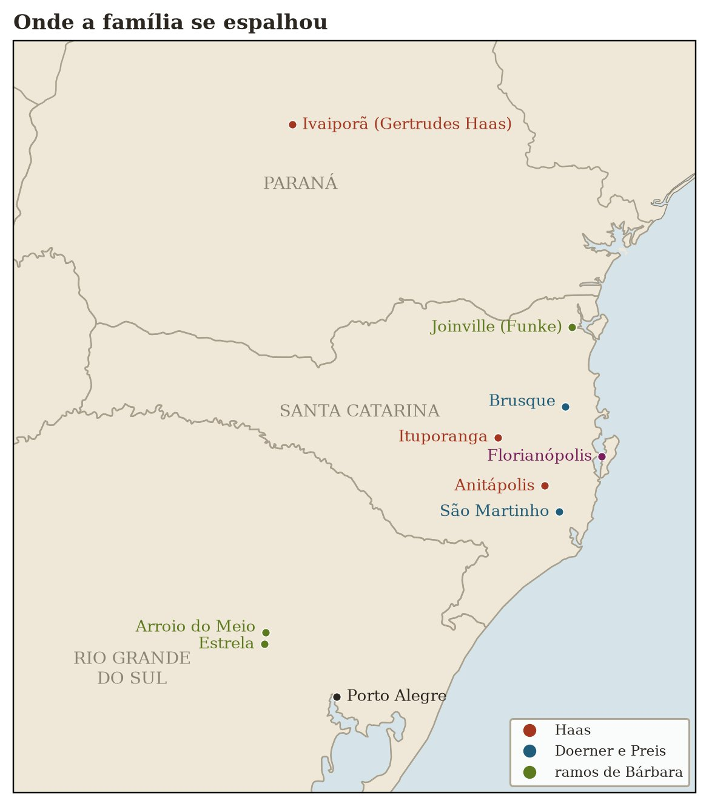

Teil I · Echos im Bergland von Santa Catarina
Kapitel 1 — Das Haus in Vidal Ramos und die Eiserne Hochzeit
Wetterlage: stationäre Kaltfront über dem Itajaí-Tal. Tendenz: die alten Stimmen werden allmählich leiser. Empfehlung: zuhören, solange es noch geht.
27,4° S · 49,4° W, Vidal Ramos, SC
Der Nebel im Tal bewahrt die Kälte der Nacht, bis die Sonne beschließt, dass es Zeit ist zu vergessen.
Während ich schreibe, habe ich weder das genaue Datum der Hochzeit meiner Eltern im Jahr 1947 zur Hand noch den Namen der Kirche, in der sie gefeiert wurde. Das ist eine der offenen Fragen dieser Untersuchung, und es ist mir peinlich, eine so naheliegende Angabe nicht auswendig zu wissen. Es ist immer so: Nach dem, was am nächsten liegt, fragt man am wenigsten.
Die Straße und der Nebel
Wer von Florianópolis ins Alto Vale do Itajaí hinauffährt, lernt früh, dass die Landschaft unterwegs ihre Laune wechselt. Die Küste bleibt mit ihrer salzigen Luft und ihrem zerstreuten Licht zurück; dann kommen die Hänge des Gebirges, die Kurven, die Waldstücke, die kleinen Städte, in denen die Landstraße zur Hauptstraße wird; und schließlich die engen Täler des Hinterlands mit ihren Zwiebel- und Tabakfeldern, ihren weißen Kirchen und ihren dunklen Flüssen, die zwischen Steinen dahinfließen. Ich bin diese Strecke so oft gefahren, dass ich eine Reise nicht mehr von der anderen unterscheiden kann. Ich erinnere mich weniger an jede einzelne Fahrt nach Vidal Ramos als an die Summe aller Fahrten, so wie man sich an das Klima eines Ortes erinnert und nicht an das Wetter eines Tages.
Ein Bild aber kehrt immer wieder. An kalten Morgen, vor allem im Herbst und im Winter, waren die Täler beim Erwachen voller Nebel. Von einer Anhöhe aus, bevor es bergab ging, sah man ein weißes, glattes Meer, das den Talgrund ausfüllte, und die Baumkronen und Dachfirste einiger Häuser ragten hier und da wie Inseln heraus. Für jemanden, der nicht vom Fach ist, ist das nur eine schöne Landschaft. Für einen Meteorologen ist es eine Temperaturinversion in voller Aktion.
In der Nacht gibt der Boden Wärme an den klaren Himmel ab, die Luft am Boden kühlt sich ab, wird schwerer und fließt die Hänge hinunter, bis sie sich im Talgrund sammelt wie Wasser in einer Schüssel. Darüber liegt eine Schicht wärmerer Luft, die wie ein Deckel wirkt. Die kalte Luft, dort unten gefangen, kondensiert ihre Feuchtigkeit und wird zu Nebel. Und dort bleibt er, reglos, und bewahrt die Kälte der Nacht, bis die Morgensonne genug erwärmt, um den Deckel aufzubrechen und alles in wenigen Minuten aufzulösen. Um neun Uhr ist das Tal durchsichtig, und wer spät kommt, wird nie erfahren, dass es zwei Stunden vorher unter Wasser stand.
Ich denke oft, dass das Gedächtnis einer Familie genauso funktioniert. Es sammelt sich im Talgrund, bei den Ältesten, verwahrt unter einem Deckel aus Schweigen und Gewohnheit. Dort bleibt es, solange sie leben, bereit für jeden, der früh kommt und sich die Mühe macht zu fragen. Und dann, eines Tages, steigt die Sonne, und es löst sich lautlos auf.
Vidal Ramos liegt in einem dieser Täler, am Oberlauf des Itajaí-Mirim, Nachbarort von Ituporanga. Dorthin zog mein Vater, Baldoíno Haas, nachdem er 1947 meine Mutter, Adelina Doerner, geheiratet hatte. Dort lebten sie den größten Teil ihres Lebens. Ich bin jahrzehntelang dorthin zurückgekehrt, in den Ferien, an Feiertagen, zu Geburtstagen und, ab einem gewissen Zeitpunkt, mit einer Liste von Fragen in der Tasche.
Die beiden Hüter
Mein Vater wurde am 20. April 1924 in Rio Novo geboren, im Hinterland von Ituporanga, in einem kleinen Haus, das die Familie mitten im Wald errichtet hatte. Nach den Angaben aller Quellen, die ich kenne, war er das zehnte Kind von Johann und Maria Haas; nach ihm kamen noch Maria und der kleine João. Er wuchs wie alle seine Geschwister zu Hause mit der deutschen Sprache auf, und wahrscheinlich kam das Portugiesische erst richtig mit der Schule von Águas Negras, wohin die Familie eigens gezogen war, damit die Kinder lernen konnten. Schon als Junge lernte er auch das Handwerk seines Vaters. Die drei Söhne, die das Erwachsenenalter erreichten, Fernando, Alexandre und Baldoíno, wurden Maurer, und man kann kaum übertreiben, wie viel dieses Wort in jener Familie bedeutete. Es war ein Beruf, aber auch eine Art, in der Welt zu stehen: der Glaube, dass man die Dinge mit den Händen macht, dass eine Wand im Lot sein muss und dass gute Arbeit für den spricht, der sie gemacht hat.
Woran ich mich am meisten erinnere, wenn ich versuche, ihn zusammenzufassen, ist seine Gelassenheit. Mein Vater war kein Mann großer Reden. Er hörte mehr zu, als er sprach, und wenn er sprach, dann in kurzen Sätzen, mit einem trockenen Humor, den nur die Familie verstand. Er hatte die Ruhe eines Menschen, der sein ganzes Leben mit Dingen zu tun hatte, die sich nicht drängen lassen: Mörtel, der trocknet, ein Fundament, das sich setzt, Regen, der kommt, wann er will. Ich erinnere mich nicht, dass er wegen Kleinigkeiten je die Geduld verloren hätte. Die großen Dinge hat er vielleicht für sich behalten.
Meine Mutter war das Gegenteil und die Ergänzung. Adelina wurde am 30. Oktober 1926 in São Martinho geboren, im Süden des Bundesstaates, als Tochter von Fernando Dörner und Gertrudes Preiss. Auf ihrer Seite lebte die Familie, als sie zur Welt kam, schon fast ein Jahrhundert in Santa Catarina, und das merkte man daran, wie sie von den Orten sprach: São Martinho, Vargem do Cedro, Brusque, Namen, die für sie wie Verwandte waren. Sie hatte ein erstaunliches Gedächtnis für Namen, Daten, Hochzeiten, wer wessen Kind war, wer die Schwester von wem geheiratet hatte, wer wohin gegangen war. Bis ins hohe Alter bewahrte sie sich eine liebevolle Klarheit: Sie erinnerte sich mit Zärtlichkeit, ohne an Genauigkeit zu verlieren.
Ihr Haus roch nach Holz und nach Essen. Der Tisch war immer größer als die Zahl der Leute, die daran saßen, weil immer noch jemand kommen konnte, und oft kam auch jemand. In den Gesprächen nach dem Mittagessen, wenn der Kaffee schon getrunken war und niemand es eilig hatte aufzustehen, tauchten die alten Namen auf. Ein Onkel, der nach Paraná gegangen war. Eine Tante, die in Aurora wohnte. Die Mota, die Großmutter, die nie Portugiesisch lernte. Der Fata, der Großvater, der Engel aus Gips machte. Ich habe diese Namen mein ganzes Leben lang gehört, ohne zu merken, dass sie Dokumente waren. Es war einfach Familiengerede, von der Art, von der man glaubt, dass es immer da sein wird.
Diese verstreuten Onkel und Tanten folgten einer Logik, die ich erst später verstanden habe. Von den sieben Kindern von Johann und Maria, die erwachsen wurden, blieb fast keines dort, wo die Eltern geblieben waren. Fernando, Gertrudes und Elza gingen mit ihren Familien nach Paraná, in einer neuen Wanderungswelle, die um die Mitte des Jahrhunderts viele Menschen aus den Kolonien Santa Catarinas in die neu erschlossenen Gebiete im Norden und Westen von Paraná führte. Agnes heiratete und zog nach Ribeirão das Pacas, in der Gemeinde Aurora, und Maria, die Jüngste, folgte ihr. Alexandre war der Einzige, der in Ituporanga blieb, wo er als Maurer seine Spuren an den größten Bauten der Stadt hinterließ. Baldoíno ging nach Vidal Ramos.

Das war das Muster fast aller Siedlerfamilien im Süden Brasiliens. Das Landlos eines Kolonisten, die „colônia“, wie man sagte, ernährte kaum eine Familie; unter sieben oder zehn Kinder aufgeteilt, hätte es keine einzige ernährt. Also blieb eines oder zwei in der Nähe der Eltern, und die übrigen zogen dorthin, wo es noch Land oder Arbeit gab. Die Anthropologen, die die Kolonisten des Südens untersucht haben, beschreiben diese Bewegung mit Fachbegriffen. In der Familie hatte sie Menschennamen: der Onkel aus Paraná, die Tante aus Aurora, der Cousin aus Londrina. Ich wuchs in dem Gefühl auf, es sei ganz natürlich, Verwandte an Orten zu haben, an denen ich nie gewesen war. Erst viel später begann ich mich zu fragen, ob diese Zerstreuung nicht die Fortsetzung derselben Kraft war, die meine Großeltern aus Bayern fortgetrieben hatte. Diese Frage zieht sich durch das ganze Buch.
Diese beiden Menschen waren, jeder auf seiner Seite, die letzten Beobachtungsstationen eines ganzen Systems, und ich habe lange gebraucht, um das zu begreifen. Mein Vater war eines der letzten noch lebenden Kinder von Johann und Maria Haas, was bedeutete, dass er die Erinnerung an die Einwanderer von 1913 noch aus erster Hand bewahrte. Meine Mutter bewahrte die Erinnerung an einen viel älteren Zweig, der zwischen 1828 und 1847 gekommen war und sich im Lauf von vier Generationen mit so vielen anderen vermischt hatte, dass man ihn kaum noch für deutsch hielt. Im Haus in Vidal Ramos lebten die beiden Strömungen am selben Tisch zusammen.
Es gab übrigens eine merkwürdige Asymmetrie zwischen den beiden Erinnerungen. Die meines Vaters war kurz und tief: nur zwei Generationen, die eingewanderten Eltern und er, aber mit Deutschland noch lebendig im Haus, in der Sprache, in den Büchern, die von dort mitgebracht worden waren, in den Geschichten des Fata. Die meiner Mutter war lang und flach: vier Generationen auf dem Boden Santa Catarinas, sie mitgezählt, mit Namen, die bis in die Kaiserzeit Brasiliens zurückreichten, aber mit einem Europa, das schon zu der vagen Erinnerung geschrumpft war, dass die Alten Deutsche waren. Er wusste, woher seine Eltern gekommen waren, aber, so stelle ich mir vor, wenig über die Großeltern, die in Bayern geblieben waren. Sie wusste von vielen Großeltern, aber fast nichts über das Land, aus dem sie aufgebrochen waren. Zusammen ergaben die beiden Erinnerungen so etwas wie eine vollständige Karte. Getrennt hatte jede eine Lücke genau dort, wo die andere stark war.
Fünfundsechzig Jahre
Im Jahr 2012 waren Baldoíno und Adelina fünfundsechzig Jahre verheiratet.
Das ist eine Zahl, die Respekt einflößt. Fünfundsechzig Jahre sind mehr, als die meisten Menschen insgesamt leben. Es ist genug Zeit, um die Elektrifizierung des Hinterlands zu erleben, die Ankunft der asphaltierten Straße, des Fernsehens, des Telefons und schließlich des Handys. Sie heirateten zwei Jahre nach dem Ende des Zweiten Weltkriegs, in einem Brasilien, in dem es noch schlechte Erinnerungen weckte, in der Öffentlichkeit Deutsch zu sprechen, und sie erreichten ihr Ehejubiläum in einer Zeit, in der die Enkel das Telefon in der Hosentasche trugen.
Die Feier zum 65. Hochzeitstag versammelte die Familie in Vidal Ramos. Ich werde hier keine Einzelheiten erfinden, die ich damals nicht notiert habe, und keine Szenen, die nur in meinem Wunsch existieren, sie hätte es gegeben. Von dem Fest ist mir ein Gesamteindruck geblieben, keine Abfolge von Ereignissen: die vielen Menschen, die durcheinandergemischten Generationen, Kinder, die zwischen den Tischen herumrannten, die Ältesten auf Ehrenplätzen, wie sie Glückwünsche entgegennahmen, mit jener Mischung aus Freude und Müdigkeit, die lange Feste bei Menschen über achtzig auslösen. Es gibt Fotografien, die eines Tages in einen Anhang kommen. Es gibt auch das Gefühl, das ich erst später benennen konnte, vor etwas Seltenem zu stehen.
Dieses Paar war selbst ein Zusammentreffen von Strömungen. Auf der einen Seite die späte Einwanderung von 1913, von Menschen, die nach Brasilien kamen, als die besten Landlose an der Küste schon vergeben waren, und die das Gebirge hinaufsteigen mussten, um im Alto Vale Wald zu roden. Auf der anderen Seite die Pioniereinwanderung von 1828 und 1847, von Menschen, die ankamen, als es noch fast nichts gab, die die ersten deutschen Kolonien in Santa Catarina gründeten und die, als die Haas 1913 nach Brasilien kamen, schon in Brasilien geborene Kinder und Enkel hatten. Die Haas waren katholisch; unter den Vorfahren meiner Mutter gab es Katholiken und Lutheraner, und für eine Hochzeit in der Familie Doerner im Jahr 1900 war ein Dispens wegen gemischter Religion nötig. Die Haas sprachen noch das Deutsch aus Bayern; die Doerners, die Preiss und die Michels sprachen ein Deutsch, das schon fast ein Jahrhundert in Brasilien hinter sich hatte und sich ohne Umstände mit dem Portugiesischen vermischte. Als Baldoíno und Adelina 1947 heirateten, flossen diese beiden Strömungen zusammen. Fünfundsechzig Jahre später saßen sie immer noch da, Hand in Hand.
Ungefähr zu dieser Zeit fasste ich den Entschluss, meine Mutter aufzunehmen.
Die Idee war einfach und kam spät, wie fast alle guten Ideen in Familien. Ich schaltete die Kamera ein und bat sie zu erzählen. Von ihren Eltern, von den Großeltern, von den Orten, an denen sie gewohnt hatte, von den Verwandten, an die sie sich erinnerte. Die Aufnahme existiert, sie liegt im Familienarchiv, und man hört darin ihre Stimme Namen von Menschen und Orten aussprechen: São Martinho, Vargem do Cedro, Brusque, Rio Novo, Aurora. Ich werde hier nicht aus dem Gedächtnis Sätze wiedergeben, die sie gesagt haben soll. Wenn die Stimme meiner Mutter in Anführungszeichen in dieses Buch eingeht, dann soll sie genau so eingehen, wie sie auf der Aufnahme ist, mit den Pausen, den Korrekturen mitten im Satz und dem Lachen. Diese Arbeit des Abschreibens, Minute für Minute hinzuhören und jedes Wort aufzuschreiben, steht noch aus, und ich lasse die Lücke lieber sichtbar, als sie mit einer Nachahmung zu füllen.
Was ich sagen kann, ist, was die Aufnahme für mich bedeutete. Zum ersten Mal behandelte ich ein Familiengespräch als Datensatz, den man bewahren muss, mit derselben Sorgfalt, mit der ich die Messreihe einer Wetterstation behandeln würde. Eine Station, die seit sechzig Jahren arbeitet, ist mehr wert als zehn neue Stationen, weil nur sie aufgezeichnet hat, was vorher geschah. Niemand kann zurückgehen und den Regen von 1950 messen. Niemand kann zurückgehen und eine fünfundachtzigjährige Frau fragen, was sie wusste, wenn er sie nicht gefragt hat, solange sie da war.
Der Fluss, der nach Brusque hinunterfließt
Ich habe lange gebraucht, um etwas über Vidal Ramos zu bemerken, obwohl es mir immer vor Augen lag: Das Wasser, das dort fließt, kommt in Brusque an.
Der Itajaí-Mirim entspringt in den Bergen jener Gegend und fließt, Kurve um Kurve, über Botuverá nach Brusque hinunter, und von dort weiter, bis er nahe der Mündung, in Itajaí, auf den Itajaí-Açu trifft. In Brusque beendeten meine Großeltern mütterlicherseits, Fernando Dörner und Gertrudes Preiss, ihr Leben, und dort sind sie begraben. Meine Mutter wurde im Süden des Bundesstaates geboren; die Wege, die sie ins Alto Vale führten, muss ich noch sorgfältig rekonstruieren. Sie blieb am Oberlauf des Flusses, und ihre Eltern landeten flussabwärts. Es gibt Familien, die sich entlang von Straßen verstreuen. Unsere ist zu einem guten Teil Flüssen gefolgt.
Flüsse haben im Itajaí-Tal noch eine andere Bedeutung, die jedes Kind der Gegend lernt, bevor es lesen lernt: Sie steigen.
Ich war im Juli 1983 achtzehn und im August 1984 neunzehn Jahre alt, und die beiden großen Hochwasser jener Winter gehören zur Landschaft meiner Jugend, auch wenn ich nicht mehr sicher unterscheiden kann, was ich erlebt und was ich später erzählt bekommen habe. Ich erinnere mich, oder glaube mich zu erinnern, an das Radio. Im Hinterland brachte damals das Radio die Nachrichten von außerhalb des Tals, und in jenen Tagen sprach es von kaum etwas anderem als vom Wasser. Die Pegelstände von Blumenau wurden stündlich wiederholt: Der Fluss stieg und stieg, und dann kam die Nachricht, dass er die Marke von irgendwann überschritten hatte. Ich erinnere mich, Namen überfluteter Stadtviertel gehört zu haben, von weggerissenen Brücken, von abgeschnittenen Städten. Ich erinnere mich an die Erwachsenen, die schweigend zuhörten. Mehr weiß ich nicht sicher, und ich werde nicht so tun, als wüsste ich es.
Was ich heute weiß, mit der Nüchternheit der Daten, ist, dass der Itajaí-Açu im Juli 1983 in Blumenau etwa 15,3 Meter erreichte und im August 1984 etwas darüber lag, bei etwa 15,5 Metern. Das waren Marken in einer Höhe, wie sie die Stadt seit Generationen nicht gesehen hatte; man verglich sie mit den Hochwassern von 1880 und 1911, letzteres nur zwei Jahre bevor die Haas in Brasilien an Land gingen. Ich weiß auch, dass 1982 und 1983 Jahre eines sehr starken El Niño waren, eines der intensivsten des 20. Jahrhunderts, und dass El Niño den Süden Brasiliens gewöhnlich regenreicher macht, mit Fronten, die über der Region stehen bleiben, und Regenfällen, die sich Tag für Tag wiederholen, bis der Boden nichts mehr aufnehmen kann. Später, schon in der Meteorologie, begegneten mir die Hochwasser von 1983 und 1984 in den Fachartikeln wieder, als Fallstudien. Für mich waren sie etwas anderes: der Klang des Radios in der Küche.
Ituporanga, wo mein Vater geboren wurde und wo sich die Familie Haas niederließ, liegt am Itajaí do Sul, einem der Arme, die den Itajaí-Açu bilden. Dort wurde in den 1970er-Jahren einer der drei großen Hochwasserschutzdämme des Tals gebaut, die Barragem Sul. Die anderen beiden sind die Barragem Oeste in Taió und die Barragem Norte in José Boiteux, letztere erst 1992 fertiggestellt. Sie sollten einen Teil des Wassers im Oberlauf zurückhalten und die Hochwasserspitzen flussabwärts abmildern, in Rio do Sul, in Blumenau, in Itajaí. Sie funktionieren, innerhalb gewisser Grenzen; kein Damm der Welt löst alles, und die Barragem Norte hat zudem eine offene Wunde hinterlassen, weil sie einen Teil des Landes der Laklãnõ überflutete, der Xokleng, eines indigenen Volkes, das durch die Kolonisierung jener Täler schon viel verloren hatte. Ich bin an einem Ort aufgewachsen, an dem Regen ein Grund zum Wachbleiben war.
Damals wusste ich noch nicht, dass ich eines Tages beruflich Hochwasser untersuchen würde, dass ich jahrelang Vorhersage- und Abflussmodelle für dieselben Flüsse laufen lassen würde, von denen ich im Küchenradio gehört hatte. Und auch nicht, dass ich, als ich der Geschichte meiner eigenen Familie folgte, auf andere, ebenso tückische Flüsse stoßen würde, in anderen Tälern, genau an den Orten, die meine Vorfahren zum Leben gewählt hatten.
Was mein Vater nicht erzählte
Meine Mutter erinnerte sich und erzählte. Mein Vater erinnerte sich und schwieg zum großen Teil.
Es war das Schweigen einer Generation. Die Männer, die in den 1920er-Jahren in den deutschen Kolonien Santa Catarinas geboren wurden, wuchsen in einer seltsamen Zeit auf: Sie sprachen zu Hause Deutsch, wurden draußen als Fremde behandelt, und als sie ins Jugendalter und ins junge Erwachsenenalter kamen, sahen sie, wie das Land in den Krieg gegen das Land ihrer Eltern eintrat. Mein Vater war 1941 siebzehn und 1945 einundzwanzig. Diese Jahre fielen zusammen mit der Campanha de Nacionalização, der Nationalisierungskampagne der Regierung Vargas, mit dem Verbot, in der Öffentlichkeit Deutsch zu sprechen, mit der Angst in den Kolonien, mit Geschichten von Demütigungen, die von Mund zu Mund gingen. In dem Text, den meine Schwester Marise Jahre später schreiben sollte und der in Kapitel 3 vorkommt, gibt es die Erinnerung an ein Radio, das heimlich im Keller des Hauses des Fata gehört wurde, während ein Enkel die Straße im Auge behielt. Mein Vater war in irgendeiner Weise dabei, in jener Zeit und in jenem Haus. Ich habe ihn diese Geschichte nie erzählen hören.
Später habe ich einige Male versucht, das Thema anzuschneiden. Die Antwort war fast immer dieselbe: ein kurzer Satz, eine vage Geste, ein Themenwechsel. Ich weiß nicht, ob es Schmerz war, Scham, Vorsicht oder einfach die Gewohnheit eines Menschen, der früh gelernt hatte, dass man gewisse Dinge nicht ausspricht. Wahrscheinlich von allem etwas. Viele aus dieser Generation hörten auf, mit ihren Kindern Deutsch zu sprechen, aus Angst, die Kinder könnten erleiden, was sie erlitten hatten. Viele Enkel dieser Generation wuchsen mit dem Deutsch der Großeltern im Ohr auf, ohne es je zu sprechen; die Sprache, die die Urgroßeltern mühelos benutzt hatten, wurde für die Urenkel zu einer Sache des Wörterbuchs.
Heute denke ich an dieses Schweigen wie an ein Loch im Beobachtungsnetz. Wenn eine Wetterstation aufhört zu senden, bleibt die Karte nicht weiß: Die Analyseprogramme füllen die Lücke, indem sie die Daten der Nachbarstationen interpolieren. Das Ergebnis sieht vollständig aus, aber an diesem Punkt gibt es keine Messung, nur eine Schätzung. Vieles von dem, was ich über die Kriegsjahre in der Familie Haas weiß, ist Interpolation: Es kam von Cousins, aus Texten, aus anderen Familien. Die nächstgelegene Station, mein Vater, zog es vor, nicht zu senden. Ich respektiere das. Aber ich bedauere es.
Dezember 2013
Mein Vater starb am 18. Dezember 2013 in Ituporanga, im Alter von neunundachtzig Jahren.
Ich will mich bei diesem Teil nicht lange aufhalten. Es gibt Schmerzen, die nichts gewinnen, wenn man sie beschreibt, und dieses Buch handelt nicht von meinem. Ich sage nur das Wesentliche: Er hat lange gelebt, er hat in Würde gelebt, er hat seine Kinder aufwachsen und seine Enkel zur Welt kommen sehen, und er ging zu Ende in derselben Gegend, in der er geboren worden war und sein ganzes Leben gearbeitet hatte. Eine Woche vor Weihnachten kehrte der Mann, der auf einer Lichtung in Rio Novo als Sohn zweier bayerischer Einwanderer zur Welt gekommen war, in die Erde des Alto Vale zurück.
Was ich sagen muss, ist, was sein Tod mit dieser Forschung gemacht hat. Bis dahin war die Genealogie für mich ein Interesse gewesen, eine Wochenendneugier, etwas, das ich in Ruhe machen würde, wenn ich Zeit hätte. In jenem Dezember war es mit der Ruhe vorbei. Ich begriff mit fast körperlicher Klarheit, dass der letzte Mensch in der Familie, der den Fata und die Mota mit den Augen eines Sohnes gesehen hatte, nicht mehr da war, um zu antworten. Die Fragen, die ich ihm nicht gestellt hatte, über den Krieg, über die Kindheit in Rio Novo, über das, was seine Eltern von Deutschland erzählten, würden für immer unbeantwortet bleiben. Der Nebel im Tal hatte begonnen, sich aufzulösen, und für einen Teil davon war ich zu spät gekommen.
Meine Mutter war noch da. Klar im Kopf, mit ihrem Gedächtnis für Namen und Daten, sollte sie noch fünf Jahre leben, und diese Jahre sollten kostbar sein für alles, was in diesem Buch noch folgt. Aber die Lektion war erteilt: Es würde keine zweite Gelegenheit geben zuzuhören.
Von da an hörte die Forschung auf, ein Zeitvertreib zu sein, und wurde zur Verpflichtung. Ich begann, alles aufzuschreiben. Ich beantwortete die E-Mails der Cousins mit der Aufmerksamkeit, die ich vorher wissenschaftlichen Artikeln vorbehalten hatte. Ich begann, den Daten zu misstrauen, die alle für sicher hielten, und nach den Papieren zu suchen, die sie bestätigen konnten. Und vor allem begann ich, auf zwei Wörter zu achten, die ich mein Leben lang gehört hatte, ohne sie zu verstehen.
Ich kann ehrlicherweise nicht sagen, in welchem Gespräch ich sie zum ersten Mal hörte, ob aus dem Mund meines Vaters, einer Tante, eines Cousins, oder ob ich sie gelesen hatte, bevor ich sie hörte. Ich weiß, dass sie da waren, in irgendeinem Winkel des Familiengedächtnisses, ausgesprochen auf diese Art, wie die Älteren deutsche Namen aussprachen, halb verschluckt, halb gesungen: Heumaden. Sandberg. Zwei Dörfer in Bayern, aus denen die Mota und der Fata gekommen waren.
Für euch zum Entdecken
- An welchem Tag im Jahr 1947 haben Baldoíno und Adelina geheiratet, und in welcher Kirche?
- Die Aufnahme eurer Großmutter liegt im Familienarchiv und ist noch nicht abgeschrieben. Welche Namen spricht sie darin aus, die ihr zu Hause nie gehört habt?
- Hat Baldoíno jemals jemandem erzählt, was er in den Kriegsjahren erlebt hat, oder vom Radio im Keller gesprochen? Fragt die Onkel, Tanten und die älteren Cousins.
- Wer in der Familie erinnert sich noch, die Wörter Heumaden und Sandberg gehört zu haben, und aus wessen Mund?